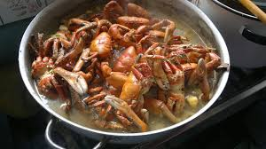

Receta de Cangrejada a la Kenny
CANGREJADA GUAYAQUILEÑA
En la actualidad los restaurantes que existen en la ciudad de Guayaquil y se especializan en ofertar este plato tradicional son conocidos popularmente como “cangrejales”. En lo que se refiere a la venta de este maravilloso crustáceo, así como su distribución, se pueden hallar con facilidad en el Mercado Caraguay, localizado en el sur de la ciudad. A causa de la gran popularidad que tiene este platillo, desde el año 2009 se realiza anualmente el Festival de Cangrejo del Litoral, donde se reúne una gran cantidad de personas, para capturar cangrejos.
¿Cómo hacer cangrejos criollos?
Porciones: 12 Tiempo de preparación: 40 minutos
Ingredientes
1 atado de perejil , 1 puñado de sal en grano , 1/2 atado de cebolla blanca , 1/2 atado de cebolla blanca , 2 atados de hierbitas , 2 botellas de cerveza , 200 gramos de comino , 4 litros de agua , 4 onzas de orégano , 6 pepas de ajo , Maduros o verdes cocinados y Una plancha de cangrejos
Preparación
En una olla grande hervir el agua con la cebolla, ajo en pepa picadito, sal en grano, las especias (orégano, comino), hierbita y perejil. Agregamos los cangrejos bien lavados, y los verdes o maduros en trozos, pero con cáscara. Una vez hervidos ponemos a cocinar el cangrejo por 15 minutos. aumentamos la ceverza. Dejamos hervir 5 minutos más. Dejar reposar el cangrejo 5 minutos en el agua hervida. Servimos con maduros o verde en trozos.
Recomendaciones
Acompañar con cerveza bien fría Servir con arroz blanco, pan, etc
 Vista mi sitio en youtube de la misma receta ;)